- 01 认知：ElasticSearch基础概念.md.html
- 02 认知：Elastic Stack生态和场景方案.md.html
- 03 安装：ElasticSearch和Kibana安装.md.html
- 04 入门：查询和聚合的基础使用.md.html
- 05 索引：索引管理详解.md.html
- 06 索引：索引模板(Index Template)详解.md.html
- 07 查询：DSL查询之复合查询详解.md.html
- 08 查询：DSL查询之全文搜索详解.md.html
- 09 查询：DSL查询之Term详解.md.html
- 10 聚合：聚合查询之Bucket聚合详解.md.html
- 11 聚合：聚合查询之Metric聚合详解.md.html
- 12 聚合：聚合查询之Pipline聚合详解.md.html
- 13 原理：从图解构筑对ES原理的初步认知.md.html
- 14 原理：ES原理知识点补充和整体结构.md.html
- 15 原理：ES原理之索引文档流程详解.md.html
- 16 原理：ES原理之读取文档流程详解.md.html
- 17 优化：ElasticSearch性能优化详解.md.html
- 18 大厂实践：腾讯万亿级 Elasticsearch 技术实践.md.html
- 19 资料：Awesome Elasticsearch.md.html
- 20 WrapperQuery.md.html
- 21 备份和迁移.md.html
05 索引：索引管理详解
索引管理的引入
我们在前文中增加文档时，如下的语句会动态创建一个customer的index：
PUT /customer/_doc/1
{
"name": "John Doe"
}
而这个index实际上已经自动创建了它里面的字段（name）的类型。我们不妨看下它自动创建的mapping：
{
"mappings": {
"_doc": {
"properties": {
"name": {
"type": "text",
"fields": {
"keyword": {
"type": "keyword",
"ignore_above": 256
}
}
}
}
}
}
}
那么如果我们需要对这个建立索引的过程做更多的控制：比如想要确保这个索引有数量适中的主分片，并且在我们索引任何数据之前，分析器和映射已经被建立好。那么就会引入两点：第一个禁止自动创建索引，第二个是手动创建索引。
- 禁止自动创建索引
可以通过在 config/elasticsearch.yml 的每个节点下添加下面的配置：
action.auto_create_index: false
手动创建索引就是接下来文章的内容。
索引的格式
在请求体里面传入设置或类型映射，如下所示：
PUT /my_index
{
"settings": { ... any settings ... },
"mappings": {
"properties": { ... any properties ... }
}
}
-
settings: 用来设置分片,副本等配置信息
-
mappings
: 字段映射，类型等
- properties: 由于type在后续版本中会被Deprecated, 所以无需被type嵌套
索引管理操作
我们通过kibana的devtool来学习索引的管理操作。
创建索引
我们创建一个user 索引test-index-users，其中包含三个属性：name，age, remarks; 存储在一个分片一个副本上。
PUT /test-index-users
{
"settings": {
"number_of_shards": 1,
"number_of_replicas": 1
},
"mappings": {
"properties": {
"name": {
"type": "text",
"fields": {
"keyword": {
"type": "keyword",
"ignore_above": 256
}
}
},
"age": {
"type": "long"
},
"remarks": {
"type": "text"
}
}
}
}
执行结果
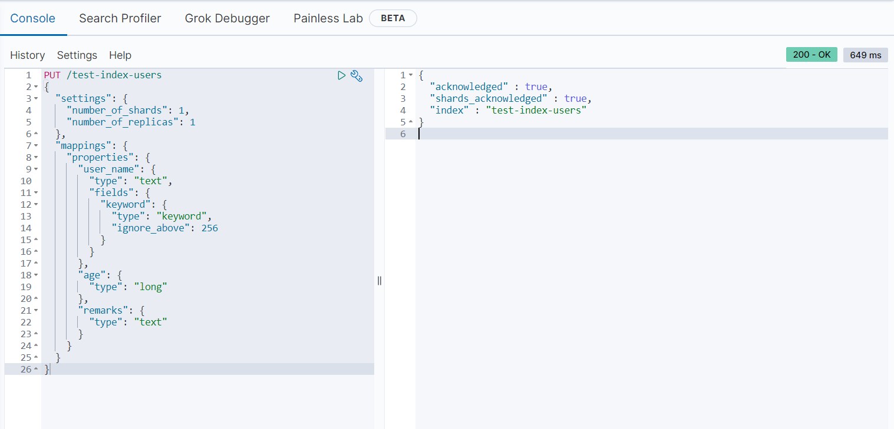
- 插入测试数据
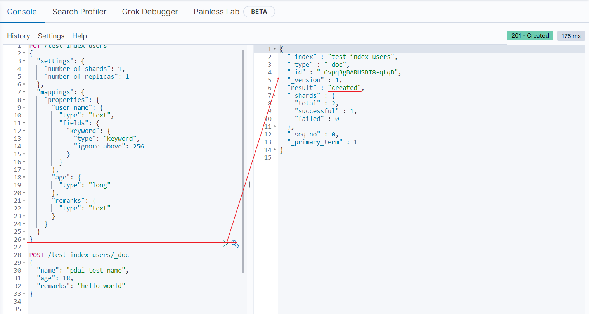
查看数据

- 我们再测试下不匹配的数据类型(age)：
POST /test-index-users/_doc
{
"name": "test user",
"age": "error_age",
"remarks": "hello eeee"
}
你可以看到无法类型不匹配的错误：
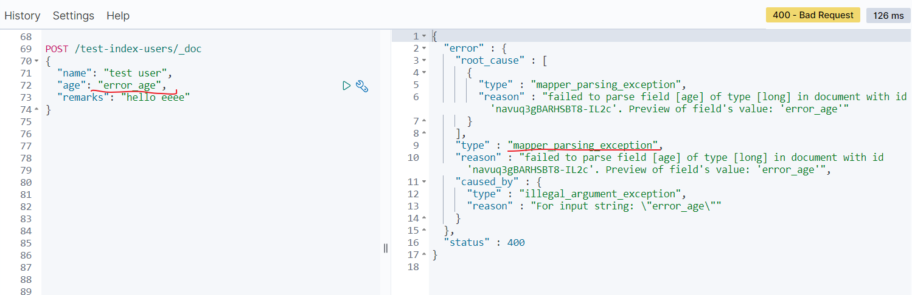
修改索引
查看刚才的索引,curl 'localhost:9200/_cat/indices?v' | grep users
yellow open test-index-users LSaIB57XSC6uVtGQHoPYxQ 1 1 1 0 4.4kb 4.4kb
我们注意到刚创建的索引的状态是yellow的，因为我测试的环境是单点环境，无法创建副本，但是在上述number_of_replicas配置中设置了副本数是1； 所以在这个时候我们需要修改索引的配置。
修改副本数量为0
PUT /test-index-users/_settings
{
"settings": {
"number_of_replicas": 0
}
}
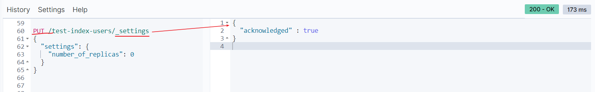
再次查看状态：
green open test-index-users LSaIB57XSC6uVtGQHoPYxQ 1 1 1 0 4.4kb 4.4kb
打开/关闭索引
- 关闭索引
一旦索引被关闭，那么这个索引只能显示元数据信息，不能够进行读写操作。
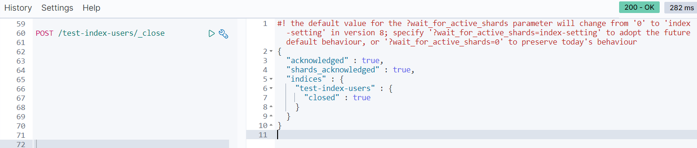
当关闭以后，再插入数据时：
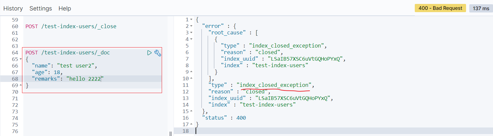
- 打开索引
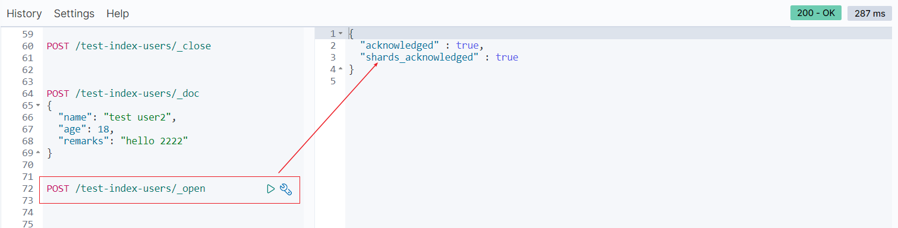
打开后又可以重新写数据了
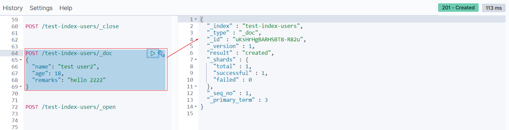
删除索引
最后我们将创建的test-index-users删除。
DELETE /test-index-users
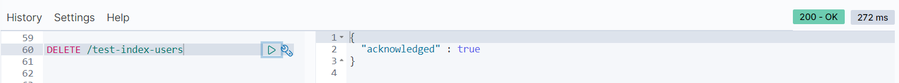
查看索引
由于test-index-users被删除，所以我们看下之前bank的索引的信息
- mapping
GET /bank/_mapping
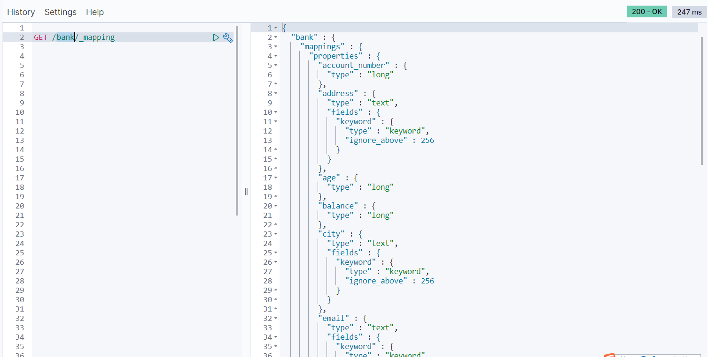
- settings
GET /bank/_settings
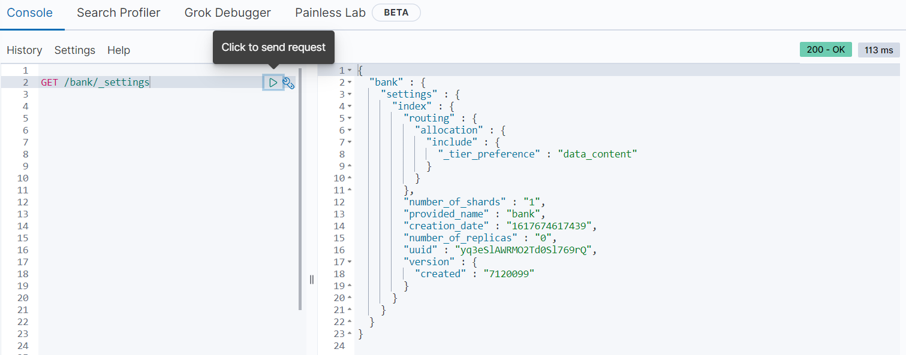
Kibana管理索引
在Kibana如下路径，我们可以查看和管理索引
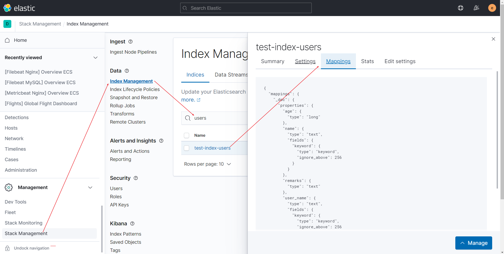
参考文章
https://www.elastic.co/guide/cn/elasticsearch/guide/current/_creating_an_index.html
https://www.elastic.co/guide/en/elasticsearch/reference/current/mapping.html
https://www.elastic.co/guide/en/elasticsearch/reference/current/removal-of-types.html
https://www.cnblogs.com/quanxiaoha/p/11515057.html